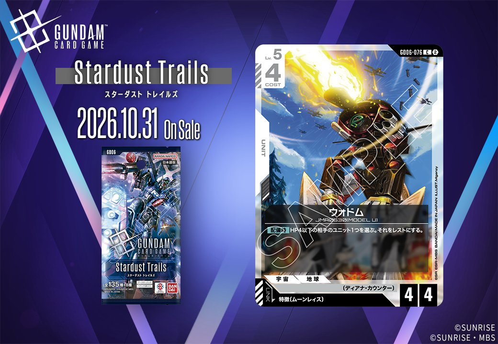
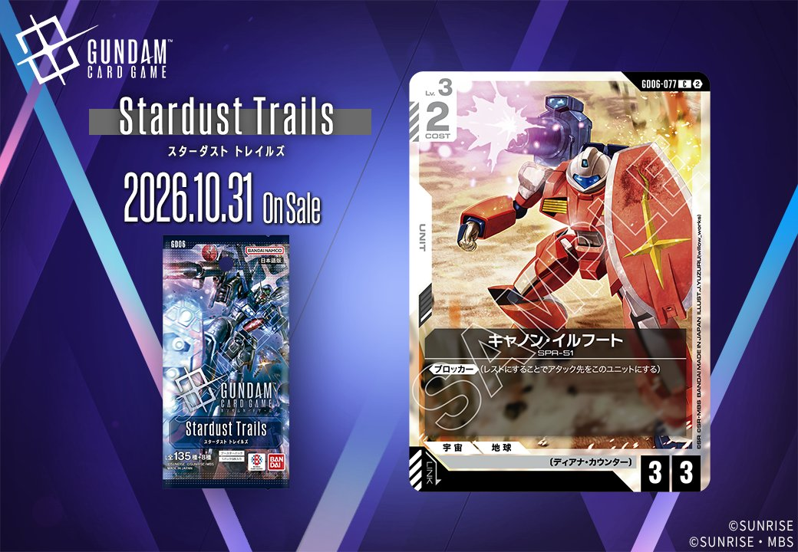
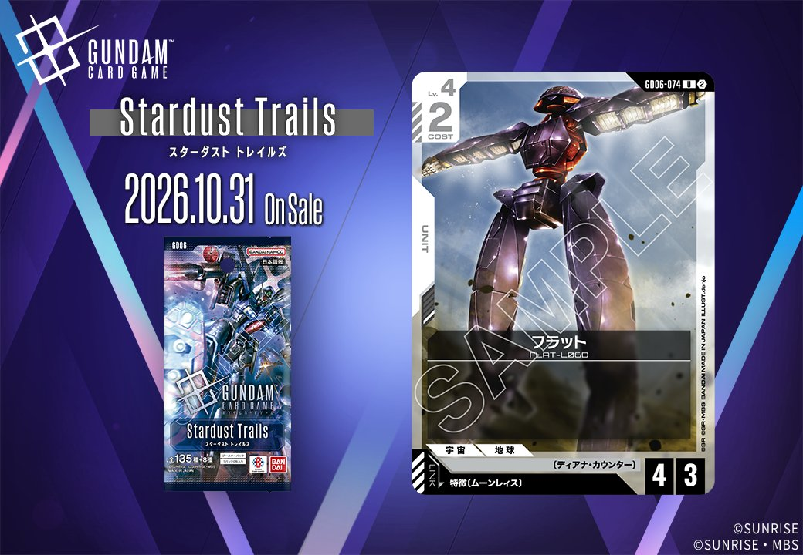

GD06「Stardust Trails」に収録される白のカードから、UNIT2枚を取り上げました。ウォドム（GD06-076）は、特徴にムーンレイスを持つパイロットをリンク条件に指定するUNITです。キャノン・イルフート（GD06-077）も同じく白のUNITで、ここからはこの2枚を順に見ていきます。

ウォドム (GD06-076)
| 色 | 白 | タイプ | UNIT |
| Lv | 5 | コスト | 4 |
| AP | 4 | HP | 4 |
| 特徴 | 〔ディアナ・カウンター〕 | ||
| リンク条件 | 特徴にムーンレイスを持つPILOT | ||
効果: 【配備時】HP4以下の相手のユニット1つを選ぶ。それをレストにする。
ウォドムはLv.5・コスト4、AP4/HP4のユニットです。【配備時】にHP4以下の相手ユニット1つをレストにできます。対象が《ブロッカー》持ちなら、レストにすればそのユニットは身代わりに使えなくなり、他の味方のアタックを通しやすくなります。レストになったユニットは味方のアタック先にも選べるため、盤面の取り合いにも使えるでしょう。HP5以上の相手には効かない点に注意が必要です。リンク条件は特徴にムーンレイスを持つパイロットです。同じ〔ディアナ・カウンター〕のソレイユは、パイロット未セットの相手ユニットを味方の該当ユニット数だけAP-するため、ウォドムが場にいれば減少量を1つ増やせます。



キャノン・イルフート (GD06-077)
| 色 | 白 | タイプ | UNIT |
| Lv | 3 | コスト | 2 |
| AP | 3 | HP | 3 |
| 特徴 | 〔ディアナ・カウンター〕 | ||
効果: 《ブロッカー》(レストにすることでアタック先をこのユニットにする)
キャノン・イルフート（GD06-077）は、Stardust Trailsに収録された白のユニットです。Lv.3・コスト2でAP3/HP3を持ち、効果は《ブロッカー》のみになります。リンク条件がないためリンクユニットにはならず、配備したターンのアタックや【リンク中】などの効果は使えません。パイロットをセットすれば、AP・HPの加算とパイロット自身の効果は受けられます。評価の軸は、低コストで置ける壁役という点でしょう。HP3あれば、AP2以下のユニットにアタックされても場に残れます。特徴〔ディアナ・カウンター〕を持つので、ソレイユの【配備時】で相手ユニットのAPを下げる際に、その数へ加算できます。ブロックした際のバトル中に泣き虫ボウを使えば、アタックしてきたユニットをAP-2でき、バトル後も場に残りやすくなります。
関連カード
-
 ソレイユ(GD06-130)NEW白系 — 同色・共通特徴: ディアナ・カウンター（新カード）
ソレイユ(GD06-130)NEW白系 — 同色・共通特徴: ディアナ・カウンター（新カード） -

フラット(GD06-074)NEW白系 — 同色・共通特徴: ディアナ・カウンター（新カード） -
キャノン・イルフート(GD06-077)NEW白系 — 同色・共通特徴: ディアナ・カウンター（新カード）
-
 泣き虫ボウ(GD06-121)NEW白系 — リンク対象（ムーンレイス PILOT）（新カード）
泣き虫ボウ(GD06-121)NEW白系 — リンク対象（ムーンレイス PILOT）（新カード） -
 メリーベル・ガジット(GD06-087)NEW緑系 — リンク対象（ムーンレイス PILOT）（新カード）
メリーベル・ガジット(GD06-087)NEW緑系 — リンク対象（ムーンレイス PILOT）（新カード） -
 ギム・ギンガナム(GD06-085)NEW緑系 — リンク対象（ムーンレイス PILOT）（新カード）
ギム・ギンガナム(GD06-085)NEW緑系 — リンク対象（ムーンレイス PILOT）（新カード） -
 車懸りの陣(GD06-107)NEW緑系 — リンク対象（ムーンレイス PILOT）（新カード）
車懸りの陣(GD06-107)NEW緑系 — リンク対象（ムーンレイス PILOT）（新カード） -
ウォドム(GD06-076)NEW白系 — 同色・共通特徴: ディアナ・カウンター（新カード）